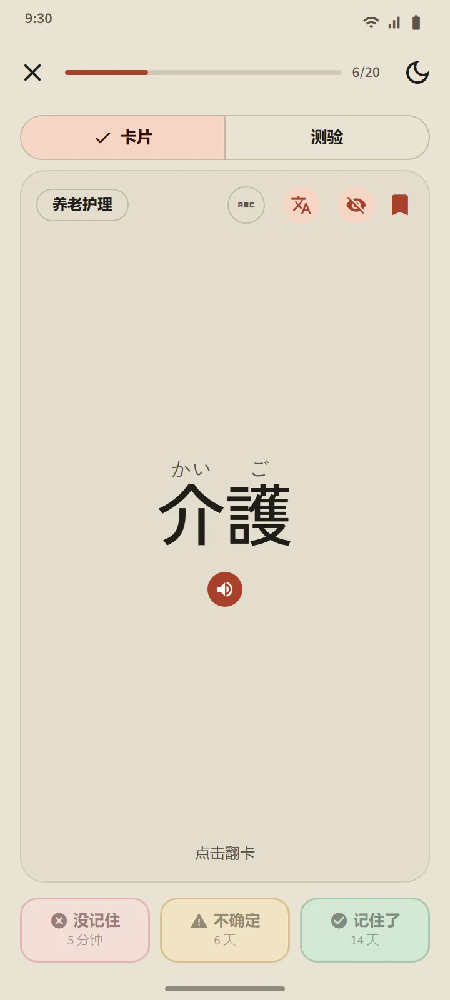
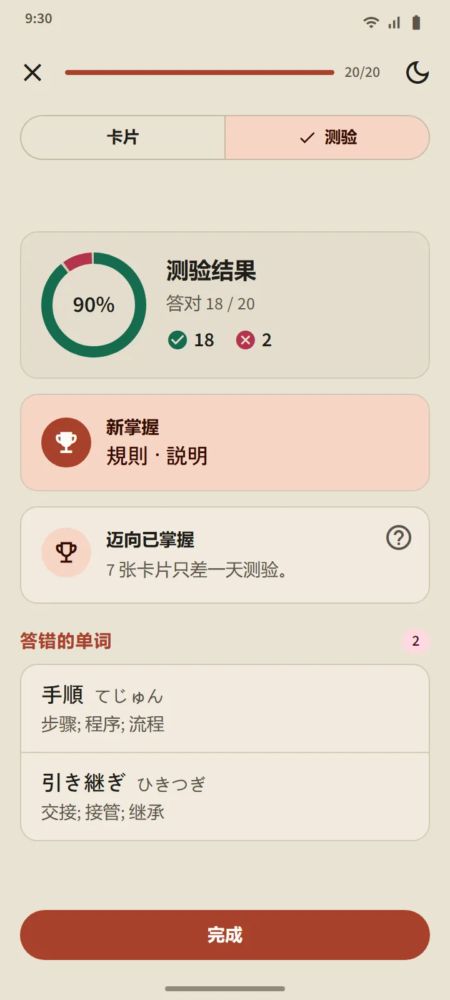
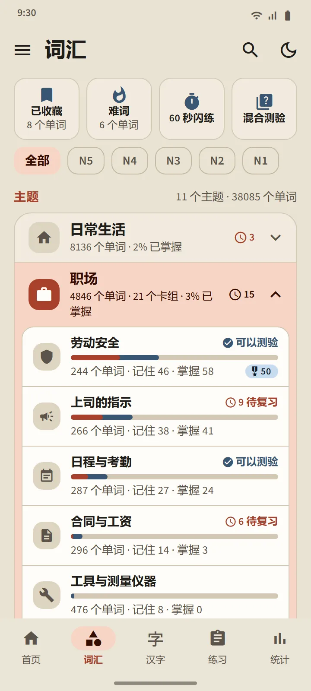
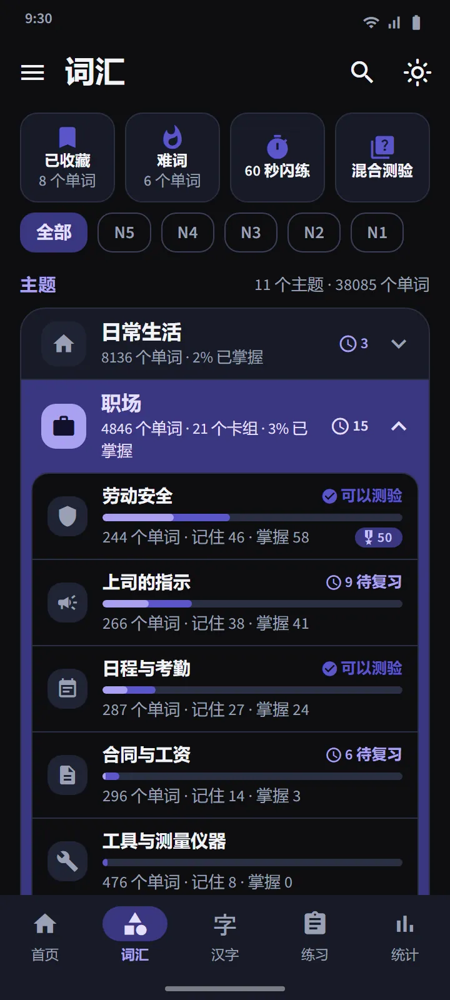

知道你何时快要忘记的记忆卡
卡片正面显示单词（需要的话可显示振假名）。点按翻面后会看到读音、罗马字、释义和组成汉字，还有一个发音按钮。然后用三个按钮之一给自己打分。
复习安排由 FSRS 完成，这是现代记忆卡应用所使用的间隔重复算法。每个按钮上都显示这个单词何时再出现：几分钟、几天或几周后。你越常选“记住了”，间隔就越长。
- 没记住会让单词从任何阶段退回到“学习中”。
- 不确定会缩短它的间隔。
- 记住了会让单词升到“已记住”，并把下一次复习推后。


四个阶段，“已掌握”要靠实力证明
每个单词都要经过四个阶段：新、学习中、已记住、已掌握。在卡片上按“记住了”只能把单词升到“已记住”。要达到“已掌握”，必须在三个不同的日子的测验中答对。已掌握的单词到期后仍会再次被测试，答错就会降级。
一个卡组的测验会在其中 20 个单词达到“已记住”或“已掌握”后开放（单词较少的卡组，只要全部单词都已记住就会开放）。题目是双向的：由单词选释义，由释义选单词。结束时你会看到新掌握的单词、只差一步的单词，以及答错的单词。


按主题学习，跟踪每个单词
“词汇”标签页分为 11 个大类，每个大类下有若干小卡组。上方的筛选器可以把所有内容限定在某一个 JLPT 级别。每个卡组都有自己的页面：完成百分比圆环、列出每个单词状态的单词列表、“学习中”/“已记住”/“已掌握”筛选，以及“学习”和“测验”按钮。
职场大类包含 21 个供准备赴日工作者使用的卡组：劳动安全, 上司的指示, 日程与考勤, 合同与工资, 工具与测量仪器, 物流与仓储, 办公与文件, 食品加工, 养老护理, 工厂与生产, 工业机械, 电子与电气, 建筑施工, 餐厅与厨房, 农业, 造船, 楼宇清洁, 渔业, 汽车与维修, 航空与机场, 酒店服务。为在日本生活，还有交通、购物与金钱、家居与家具等卡组，以及社会与行政和身体与健康大类。
| 大类 | 卡组 |
|---|---|
| 日常生活 | 16 |
| 职场 | 21 |
| 社会与行政 | 8 |
| 身体与健康 | 8 |
| 性格与情绪 | 8 |
| 词类 | 5 |
| 科技与媒体 | 4 |
| 自然与科学 | 10 |
| 学术与观点 | 8 |
| 文化与宗教 | 4 |
| 体育与游戏 | 3 |


特别卡组和快速练习
大类列表上方有三个从所有卡组中抽取单词的卡组：已收藏（你加了星标的单词）、难词（会自动收入你在卡片上总是忘记、或在测验中总是答错的单词）和 60 秒闪练（一分钟内能做多少张卡片就做多少张）。第四个方块混合测验会一次性测试所有卡组中“已记住”和“已掌握”的单词。

收录 38,085 个单词的口袋词典
顶部栏的搜索图标可以按汉字、假名、罗马字或释义查找任何单词。结果按匹配程度排序，罗马字搜索允许一定的拼写差异：shinbun 和 shimbun、koohii 和 kōhī、arigato 和 arigatou 都能找到同一个单词。每个单词都有详情页：它的阶段和下次复习时间、释义、带读音的组成汉字，以及发音按钮。


级别与释义语言
单词级别是估算的：国际交流基金（Japan Foundation）没有公布官方词汇表，所以级别是根据旧版 JLPT 词表和使用频率划分的。没有单独的“JFT”单词级别：JFT-Basic 考察的是与 N5、N4 相同的基础词汇，再加上职场用词。
11 种语言的释义是完整的。高棉语和中文涵盖所有免费单词；尚未翻译的单词显示英文。翻译语言可以在“设置”中与界面语言分开选择。
| 级别 | 单词数 | 免费 |
|---|---|---|
| N5 | 1,030 | 1,007 |
| N4 | 2,044 | 1,505 |
| N3 | 11,230 | 4,101 |
| N2 | 11,309 | 2,291 |
| N1 | 12,472 | 502 |